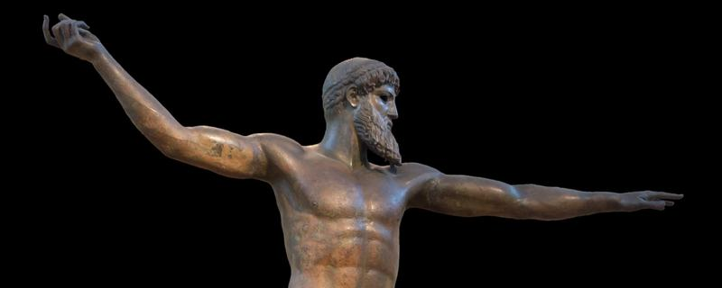

Aprende y juega
Ya hablas latín y griego
Mira cómo es una clase, descubre de dónde vienen las palabras, escribe tu nombre con letras griegas y llévate las fichas del departamento.

Sesenta minutos
Un día en clase de Latín
No hace falta saber nada antes de entrar. Así puede ser una clase, de principio a fin.
- Minuto 0
Una palabra para empezar
Una palabra latina en la pizarra y todo lo que ha dejado en castellano: de aqua, agua, acuario, acueducto y acuático.
- Minuto 10
Un texto delante
Leemos en voz alta una frase o un texto breve. El latín se pronuncia casi como se escribe.
- Minuto 20
El puzle
Cada terminación dice qué papel hace cada palabra. Analizamos, ordenamos y traducimos entre todos.
- Minuto 40
Roma y Grecia
Un mito, una costumbre, un edificio o un personaje: lo que hay detrás del texto que acabamos de leer.
- Minuto 50
Ahora tú
Un reto de etimología, un juego o un taller, como el de papiros que decora nuestra aula.
Este esquema es orientativo: no todas las clases son iguales ni siguen este orden. Hay días de taller, de lectura, de repaso o de salida.
Prueba el puzle
Pulsa cada palabra de esta frase para descubrir qué hace en ella.
El latín no tiene artículos y el orden de las palabras es libre: lo que manda es la terminación.
"El profesor cuenta una historia a los alumnos."
La palabra de la semana
Candidatus candidato: "vestido de blanco"En Roma, quienes aspiraban a un cargo público llevaban una toga blanqueada para hacerse notar. De ahí viene nuestro "candidato", y también "cándido".
Un juego
¿De dónde viene esta palabra?
¿Qué significaba en su origen?
Otro juego
Escribe tu nombre en griego
Teclea tu nombre y míralo con las letras del alfabeto griego, las mismas que usaron Homero y Platón.
Es una adaptación aproximada, letra a letra y por el sonido: el griego no tiene todos los sonidos del castellano (la "ch", la "j" o la "ñ" se escriben con la letra más parecida). No se guarda ni se envía nada de lo que escribas.
Para alumnado y familias
Recursos
Todo el material del departamento está en la biblioteca de recursos de la web del IES Sabinar. Aquí tienes acceso directo a lo más útil.
Para estudiar
Para conocernos
Para seguir aprendiendo
Enlaces recomendados
Una selección de páginas en español, gratuitas y de instituciones de confianza, para aprender, leer, escuchar y visitar el mundo clásico. Te llevan a la web de cada institución.
Para aprender y estar al día
Lengua y diccionarios
Mitología y arte
Escuchar y ver
Conferencias de la Fundación Juan March
Más de cien conferencias de especialistas, ordenadas por temas y con los momentos clave señalados. Algunas incluyen lecturas de textos clásicos a cargo de actores.
Museos y yacimientos
Para 2.º de Bachillerato
Calcula tu nota de admisión
Escribe tus notas y mira cuánto suben Latín II y Griego II en el grado que te interesa.
Ir a la calculadora →¿Te ha gustado?
Apúntate a Latín y Griego
Latín en 4.º de ESO y Bachillerato de Humanidades, en el diurno y en el nocturno semipresencial.
Ver cómo apuntarte →